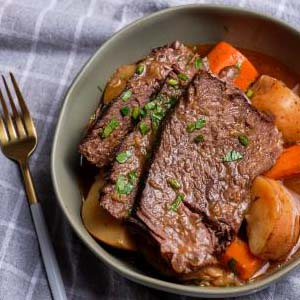
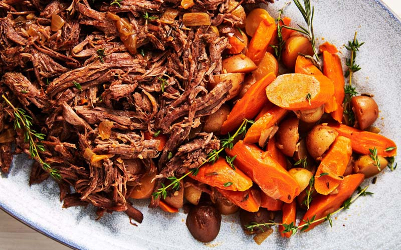

International Dishes Recipe 6:
Pork Roast
- Dish Description:
- This classic roast pork recipe with lots of delicious crackling is great for Sunday lunch with the family. Top with our tasty apple & cider gravy. A pork loin joint or pork loin roast is a larger section of the loin which is roasted. It can take two forms: 'bone in', which still has the loin ribs attached, or 'boneless', which is often tied with butchers' string to prevent the roast from falling apart. Pork rind may be added to the fat side of the joint to give a desirable crackling which the loin otherwise lacks.

Ingredients:
- 2 medium onions, chopped
- 2 medium carrots, chopped
- 1 celery rib, chopped
- 4 tablespoons all-purpose flour, divided
- 1 bay leaf, finely crushed
- 1/2 teaspoon dried thyme
- 1 1/4 teaspoons salt, divided
- 1 1/4 teaspoons pepper, divided
- 1 boneless pork loin roast (3 to 4 pounds)
- 1/3 cup packed brown sugar
Directions:
- Preheat oven to 325°. Place vegetables on bottom of a shallow roasting pan.
- Mix 2 tablespoons flour, bay leaf, thyme, and 1 teaspoon each salt and pepper; rub over roast.
- Place roast on top of vegetables, fat side up. Add 2 cups water to pan.
- Roast, uncovered, 1-1/2 hours. Sprinkle brown sugar over roast. Roast 15-20 minutes longer or until a thermometer reads 140°. (Temperature of roast will continue to rise another 5-10° upon standing.)
- Remove roast to a platter. Tent with foil; let stand 15 minutes before slicing.
- Strain drippings from roasting pan into a measuring cup; skim fat. Add enough water to the drippings to measure 1-1/2 cups.
- In a small saucepan over medium heat, whisk remaining flour and 1/3 cup water until smooth.
- Gradually whisk in drippings mixture and remaining salt and pepper. Bring to a boil over medium-high heat, stirring constantly; cook and stir 2 minutes or until thickened. Serve roast with gravy.
- Freeze option: Freeze cooled sliced pork and gravy in freezer containers. To use, partially thaw in refrigerator overnight. Heat through in a covered saucepan, gently stirring and adding a little broth or water if necessary.